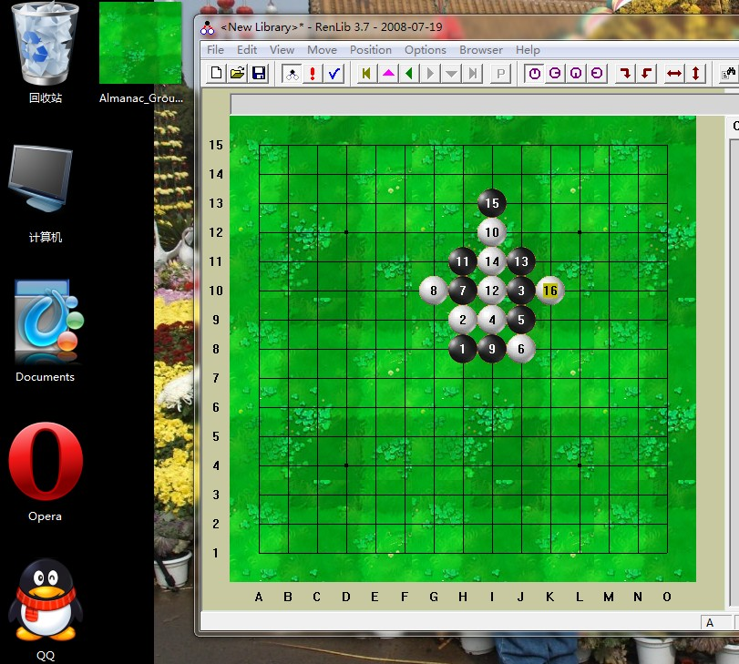

送张养眼的绿色草地作棋盘背景图片
#1 送张养眼的绿色草地作棋盘背景图片 作者：启蒙 发表时间：2010-10-13 0:07:42

从植物大战僵尸里找的，喜欢就试试看～
［此帖子已被 启蒙 在 2010-10-13 0:08:50 编辑过］
#2 Re:送张养眼的绿色草地作棋盘背景图片 作者：飞飞 发表时间：2010-10-13 10:21:52
蛮不错的，不过再怎么好，还是有点干扰。呵呵#3 Re:送张养眼的绿色草地作棋盘背景图片 作者：岳麓小棋后 发表时间：2010-10-13 12:22:02
植物大战僵尸 失落刀一个主帖子这几天一直在玩，玩到黄金向日葵了，该得的成就都有了，这个游戏玩到头了吗？智慧树那边说输入future会见到未来的僵尸，我已经100英尺高了！祝贺我吧，输入“daisies”，当僵尸被杀后掉下一些雏菊 500说哇！我已经500英尺高了！这就要跳舞啦！输入“dance”，让僵尸摆动身体吧！ 1000说哇！我已经1000英尺高了！祝贺我吧，输入“pinata”，僵尸死后散落一地的糖果！
失落刀一个主帖子这几天一直在玩，玩到黄金向日葵了，该得的成就都有了，这个游戏玩到头了吗？智慧树那边说输入future会见到未来的僵尸，我已经100英尺高了！祝贺我吧，输入“daisies”，当僵尸被杀后掉下一些雏菊 500说哇！我已经500英尺高了！这就要跳舞啦！输入“dance”，让僵尸摆动身体吧！ 1000说哇！我已经1000英尺高了！祝贺我吧，输入“pinata”，僵尸死后散落一地的糖果！
这个要在哪个地方输入啊
［此帖子已被 岳麓小棋后 在 2010-10-13 12:22:49 编辑过］